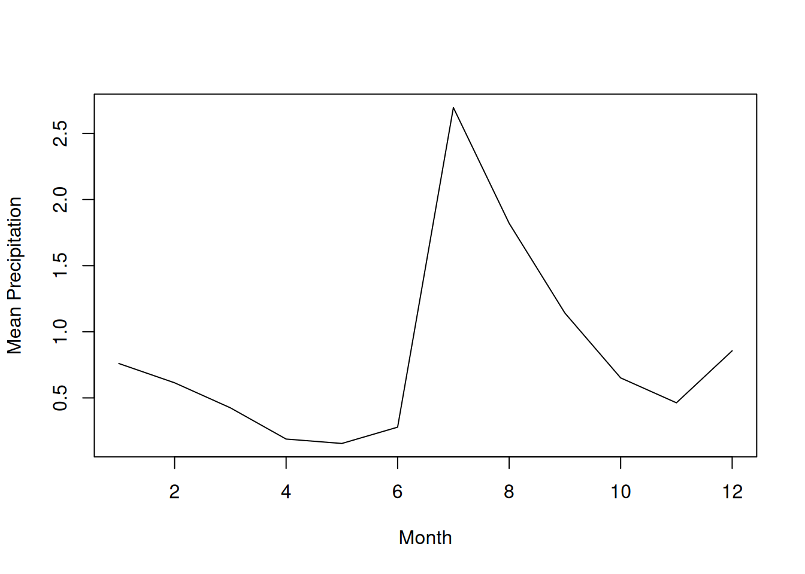

Attaching package: 'dplyr'The following objects are masked from 'package:stats':
filter, lagThe following objects are masked from 'package:base':
intersect, setdiff, setequal, unionEllen Bledsoe
April 6, 2026
Attaching package: 'dplyr'The following objects are masked from 'package:stats':
filter, lagThe following objects are masked from 'package:base':
intersect, setdiff, setequal, unionExercise 1
Rows: 15 Columns: 5
── Column specification ────────────────────────────────────────────────────────
Delimiter: ","
dbl (5): site, experiment, length, width, height
ℹ Use `spec()` to retrieve the full column specification for this data.
ℹ Specify the column types or set `show_col_types = FALSE` to quiet this message.[1] "1a"# A tibble: 15 × 1
length
<dbl>
1 2.2
2 2.1
3 2.7
4 3
5 3.1
6 2.5
7 1.9
8 1.1
9 3.5
10 2.9
11 4.5
12 1.2
13 2.6
14 1.8
15 3.1[1] "1b"# A tibble: 15 × 2
site experiment
<dbl> <dbl>
1 1 1
2 1 2
3 1 3
4 2 1
5 2 2
6 2 3
7 3 1
8 3 2
9 3 3
10 4 1
11 4 2
12 4 3
13 5 1
14 5 2
15 5 3[1] "1c"# A tibble: 15 × 6
site experiment length width height area
<dbl> <dbl> <dbl> <dbl> <dbl> <dbl>
1 1 1 2.2 1.3 9.6 2.86
2 1 2 2.1 2.2 7.6 4.62
3 1 3 2.7 1.5 2.2 4.05
4 2 1 3 4.5 1.5 13.5
5 2 2 3.1 3.1 4 9.61
6 2 3 2.5 2.8 3 7
7 3 1 1.9 1.8 4.5 3.42
8 3 2 1.1 0.5 2.3 0.55
9 3 3 3.5 2 7.5 7
10 4 1 2.9 2.7 3.2 7.83
11 4 2 4.5 4.8 6.5 21.6
12 4 3 1.2 1.8 2.7 2.16
13 5 1 2.6 0.8 NA 2.08
14 5 2 1.8 NA 5.2 NA
15 5 3 3.1 2.2 NA 6.82[1] "1d"# A tibble: 15 × 5
site experiment length width height
<dbl> <dbl> <dbl> <dbl> <dbl>
1 3 2 1.1 0.5 2.3
2 4 3 1.2 1.8 2.7
3 5 2 1.8 NA 5.2
4 3 1 1.9 1.8 4.5
5 1 2 2.1 2.2 7.6
6 1 1 2.2 1.3 9.6
7 2 3 2.5 2.8 3
8 5 1 2.6 0.8 NA
9 1 3 2.7 1.5 2.2
10 4 1 2.9 2.7 3.2
11 2 1 3 4.5 1.5
12 2 2 3.1 3.1 4
13 5 3 3.1 2.2 NA
14 3 3 3.5 2 7.5
15 4 2 4.5 4.8 6.5[1] "1e"# A tibble: 5 × 5
site experiment length width height
<dbl> <dbl> <dbl> <dbl> <dbl>
1 1 1 2.2 1.3 9.6
2 1 2 2.1 2.2 7.6
3 3 3 3.5 2 7.5
4 4 2 4.5 4.8 6.5
5 5 2 1.8 NA 5.2[1] "1f"# A tibble: 2 × 5
site experiment length width height
<dbl> <dbl> <dbl> <dbl> <dbl>
1 1 2 2.1 2.2 7.6
2 4 2 4.5 4.8 6.5[1] "1g"# A tibble: 10 × 5
site experiment length width height
<dbl> <dbl> <dbl> <dbl> <dbl>
1 1 1 2.2 1.3 9.6
2 1 3 2.7 1.5 2.2
3 2 1 3 4.5 1.5
4 2 3 2.5 2.8 3
5 3 1 1.9 1.8 4.5
6 3 3 3.5 2 7.5
7 4 1 2.9 2.7 3.2
8 4 3 1.2 1.8 2.7
9 5 1 2.6 0.8 NA
10 5 3 3.1 2.2 NA [1] "1h"# A tibble: 13 × 5
site experiment length width height
<dbl> <dbl> <dbl> <dbl> <dbl>
1 1 1 2.2 1.3 9.6
2 1 2 2.1 2.2 7.6
3 1 3 2.7 1.5 2.2
4 2 1 3 4.5 1.5
5 2 2 3.1 3.1 4
6 2 3 2.5 2.8 3
7 3 1 1.9 1.8 4.5
8 3 2 1.1 0.5 2.3
9 3 3 3.5 2 7.5
10 4 1 2.9 2.7 3.2
11 4 2 4.5 4.8 6.5
12 4 3 1.2 1.8 2.7
13 5 2 1.8 NA 5.2[1] "1i"# A tibble: 15 × 6
site experiment length width height volume
<dbl> <dbl> <dbl> <dbl> <dbl> <dbl>
1 1 1 2.2 1.3 9.6 27.5
2 1 2 2.1 2.2 7.6 35.1
3 1 3 2.7 1.5 2.2 8.91
4 2 1 3 4.5 1.5 20.2
5 2 2 3.1 3.1 4 38.4
6 2 3 2.5 2.8 3 21
7 3 1 1.9 1.8 4.5 15.4
8 3 2 1.1 0.5 2.3 1.26
9 3 3 3.5 2 7.5 52.5
10 4 1 2.9 2.7 3.2 25.1
11 4 2 4.5 4.8 6.5 140.
12 4 3 1.2 1.8 2.7 5.83
13 5 1 2.6 0.8 NA NA
14 5 2 1.8 NA 5.2 NA
15 5 3 3.1 2.2 NA NA Exercise 2

Exercise 3
Rows: 35549 Columns: 9
── Column specification ────────────────────────────────────────────────────────
Delimiter: ","
chr (2): species_id, sex
dbl (7): record_id, month, day, year, plot_id, hindfoot_length, weight
ℹ Use `spec()` to retrieve the full column specification for this data.
ℹ Specify the column types or set `show_col_types = FALSE` to quiet this message.[1] "3a"# A tibble: 35,549 × 4
year month day species_id
<dbl> <dbl> <dbl> <chr>
1 1977 7 16 NL
2 1977 7 16 NL
3 1977 7 16 DM
4 1977 7 16 DM
5 1977 7 16 DM
6 1977 7 16 PF
7 1977 7 16 PE
8 1977 7 16 DM
9 1977 7 16 DM
10 1977 7 16 PF
# ℹ 35,539 more rows[1] "3b"# A tibble: 32,283 × 4
year species_id weight weight_kg
<dbl> <chr> <dbl> <dbl>
1 1977 DM 40 0.04
2 1977 DM 48 0.048
3 1977 DM 29 0.029
4 1977 DM 46 0.046
5 1977 DM 36 0.036
6 1977 DO 52 0.052
7 1977 PF 8 0.008
8 1977 OX 22 0.022
9 1977 DM 35 0.035
10 1977 PF 7 0.007
# ℹ 32,273 more rows[1] "3c"# A tibble: 141 × 4
year species_id weight weight_kg
<dbl> <chr> <dbl> <dbl>
1 1978 SH 89 0.089
2 1982 SH 106 0.106
3 1982 SH 52 0.052
4 1986 SH 55 0.055
5 1987 SH 77 0.077
6 1987 SH 78 0.078
7 1987 SH 104 0.104
8 1987 SH 58 0.058
9 1987 SH 52 0.052
10 1988 SH 60 0.06
# ℹ 131 more rowsExercise 4
[1] "4a"# A tibble: 32,283 × 4
year species_id weight weight_kg
<dbl> <chr> <dbl> <dbl>
1 1977 DM 40 0.04
2 1977 DM 48 0.048
3 1977 DM 29 0.029
4 1977 DM 46 0.046
5 1977 DM 36 0.036
6 1977 DO 52 0.052
7 1977 PF 8 0.008
8 1977 OX 22 0.022
9 1977 DM 35 0.035
10 1977 PF 7 0.007
# ℹ 32,273 more rows[1] "4b"# A tibble: 147 × 4
year month day species_id
<dbl> <dbl> <dbl> <chr>
1 1977 7 17 SH
2 1978 11 4 SH
3 1982 5 21 SH
4 1982 6 29 SH
5 1983 3 14 SH
6 1983 4 16 SH
7 1986 10 4 SH
8 1987 7 26 SH
9 1987 8 26 SH
10 1987 10 24 SH
# ℹ 137 more rowsExercise 5
# A tibble: 14,558 × 6
month day year species_id weight hindfoot_length
<dbl> <dbl> <dbl> <chr> <dbl> <dbl>
1 4 29 1979 dm 65 37
2 8 7 1991 dm 65 37
3 5 16 2002 dm 64 35
4 5 13 1984 dm 63 35
5 12 3 1995 dm 63 38
6 10 12 1980 dm 62 35
7 10 28 1995 dm 62 37
8 1 28 1996 dm 62 38
9 1 28 1996 dm 62 38
10 11 7 1999 dm 62 36
# ℹ 14,548 more rows